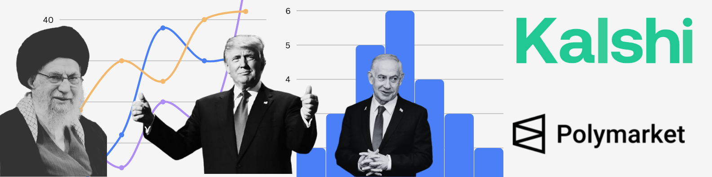

How bettors dealt with the 12-day war and the 2026 escalation on Kalshi and Polymarket
On Feb. 28, at 11:37 PM President Donald Trump announced on Truth Social, “Khamenei, one of the most evil people in History, is dead.” However, on Polymarket’s highest-trending market, traders had gone from 27% buying the Yes option a day before at 7 PM, to 96% just 24 hours later, still a few hours before Trump’s announcement.
The comment section of “Khamenei out as Supreme Leader of Iran by February 28?” opens a window into the dissatisfaction that many traders will walk away with, once the market resolves.
The discussion in the comments points to a heated debate over how this market should be resolved. Some traders claim it would be unfair to conclude that Khamenei was killed on Feb. 28, because the Iranian government confirmed his death on Mar. 1.
Others believe owing to Iran’s constitutional requirements regarding transfer of power, it only makes sense to resolve the market based on when the U.S. airstrike killed Khamenei.
Pitting Kalshi against Polymarket, traders are furiously arguing how these platforms are approaching resolving war-time bets.
Both Polymarket and Kalshi host Iran-related prediction markets. But the scale of activity on each platform could not be more different.
Polymarket’s 2026 Iran markets generated $943 million in total trading volume across 22 markets tied to the February strikes.
The single largest market, “US strikes Iran by...?”, attracted $529 million on its own, spread across 65 sub-markets betting on different dates.
Kalshi, by comparison, saw $6.6 million across 11 Iran markets. That’s roughly 143 times smaller.
The gap is so large that Kalshi’s entire Iran portfolio is less than 1% of Polymarket’s volume on the same topic.
The most popular bets on both platforms revolve around the same themes: who will lead Iran next, and what happens to the Pahlavi dynasty.
On Kalshi, the next Supreme Leader market ($3.3M) is the biggest. On Polymarket, Khamenei death markets dominate ($270M combined).
Where Kalshi competes: For niche political-future markets, Kalshi actually attracts more activity than Polymarket.
“Next Supreme Leader” on Kalshi ($3.3M) has 3x the volume of the equivalent Polymarket market ($1.1M). Pahlavi-related markets are also comparable.
The difference? Polymarket dominates binary military-outcome bets. Kalshi focuses on political futures.
In a statement on X, Kalshi CEO Tarek Mansour said, “We don’t list markets directly tied to death.” This was in response to growing concerns among prediction market traders regarding how Kalshi will end up resolving the market “Ali Khamenei out as Supreme Leader?”
A disclaimer on Kalshi’s website reads, “If Ali Khamenei dies, the market will resolve upon the confirmed reporting of the death, based on the last traded price prior to death.” Citing Rule 13.1, the market was paused, pending further review, confirming that Kalshi will reimburse lost value due to trades made between these clarifications.
Both headquartered in New York City, Kalshi and Polymarket deal with Iran-related predictions differently because their operating structures are fundamentally different.
| Polymarket | Kalshi | |
|---|---|---|
| Regulation | Unregulated offshore (Polygon blockchain) Polygon is an Ethereum layer-2 blockchain. Polymarket runs on it to enable crypto-based trading outside U.S. jurisdiction. | CFTC-regulated U.S. exchange The CFTC (Commodity Futures Trading Commission) is the U.S. federal agency that regulates derivatives and prediction markets. |
| KYC | No identity verification required KYC (Know Your Customer) refers to identity verification rules that financial institutions use to prevent fraud and money laundering. | Full KYC; U.S. residents only |
| Currency | USDC (cryptocurrency) USDC (USD Coin) is a stablecoin pegged 1:1 to the U.S. dollar, allowing crypto transactions at a stable dollar value. | U.S. dollars |
| Death markets | Lists markets directly on death outcomes | “We don’t list markets directly tied to death” |
| Dispute resolution | UMA oracle protocol (decentralized vote) UMA’s oracle protocol resolves disputes through a decentralized voting system where tokenholders vote on the correct outcome, replacing a central authority. | Internal rules committee (Rule 13.1) |
| Market pausing | Markets remain open; prices reflect disputes | Can pause and reimburse under Rule 13.1 |
| Iran volume | $943 million (2026 strikes) | $6.6 million (2026 strikes) |
The regulatory gap explains the volume gap. Polymarket’s crypto-native, globally accessible model attracts orders of magnitude more capital on geopolitical bets, but it also attracts more controversy, more disputed resolutions, and more suspicion of insider trading.
Traders took betting on Iran a lot more seriously in 2026 than they did last year during the 12-Day War. Out of the 33 Iran-related markets on Polymarket analyzed here, 22 are linked to the recent strikes.
During the June 2025 12-Day War, Polymarket’s Iran markets generated $175 million in trading volume across 9 markets.
The biggest bet? Whether there would be a ceasefire, at $51.8 million.
The 2026 U.S. Strikes generated $943 million, a 5.4x increase over the 12-Day War.
Iran-related bets topped $529 million on a single market, making it one of the most-traded contracts Polymarket has ever hosted.
The kind of bets changed dramatically.
In June 2025, ceasefire bets dominated at 30% of all volume. Traders wanted to know when it would end.
In 2026, military strike timing dominates at 71% of volume. And leadership/Khamenei bets exploded from $8M to $221M, a 27x increase.
A handful of blockbuster markets attract most of the money.
Our analysis shows a top-heavy trend: the top 10 markets hold 82% of total trading volume. The remaining 23 markets share just 18%.
Bettors are now putting money on ceasefire timing, whether the Iranian regime will fall by March 31, who will replace the Supreme Leader, and every other possibility under the sun. There are at least 66 open Iran-related markets on Polymarket, and 11 on Kalshi.
As of March 1, 2026, the active markets paint a picture of what traders expect next:
Khamenei is out. That’s priced at 99.9% certainty. But whether the Iranian regime itself falls is far less clear: 23% by March 31, 42% by June 30. A new Supreme Leader will be named by March 31, traders say, with 77% confidence.
On Kalshi, the most-traded question is who that leader will be. Alireza Arafi leads at 25%, followed by “position abolished” at 19%, a bet that Iran may not have a Supreme Leader at all.
The prediction markets have become a real-time barometer of geopolitical expectations, one where a billion dollars of capital is backing every percentage point.